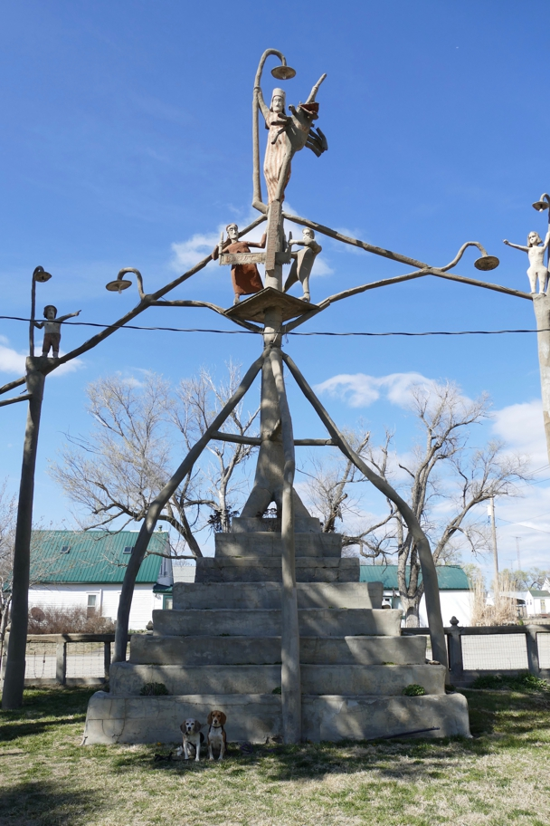

<--Previous Up Next-->

The Garden of Eden was built by Samuel Perry Dinsmoor in the early 20th century of Kansas limestone and expertly poured cement. it's still in good shape. Mr. Perry is entombed inside this ziggurat.
Halley Beagle Kansas Lucas Wallace Beagle